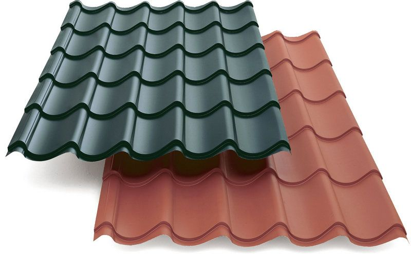
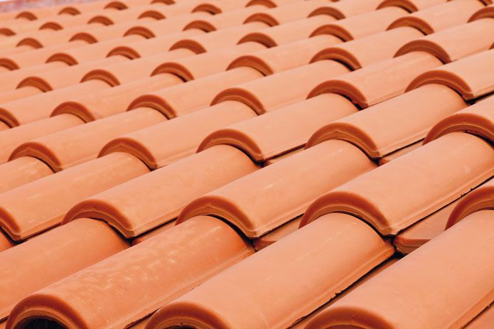
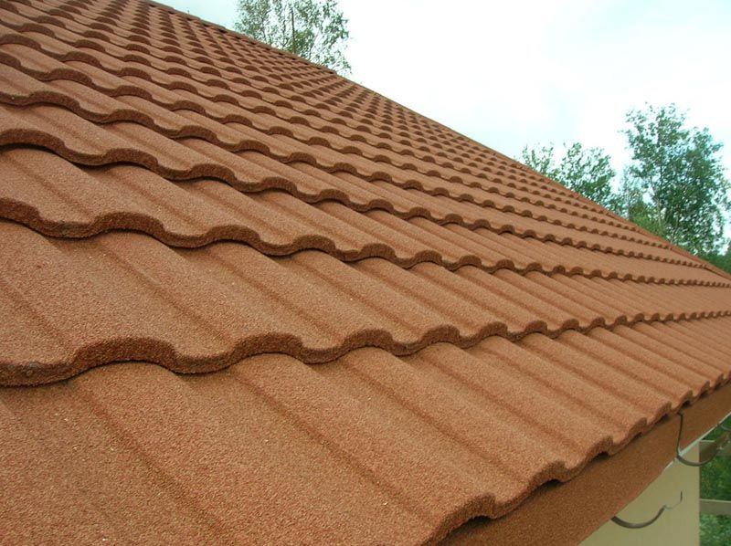
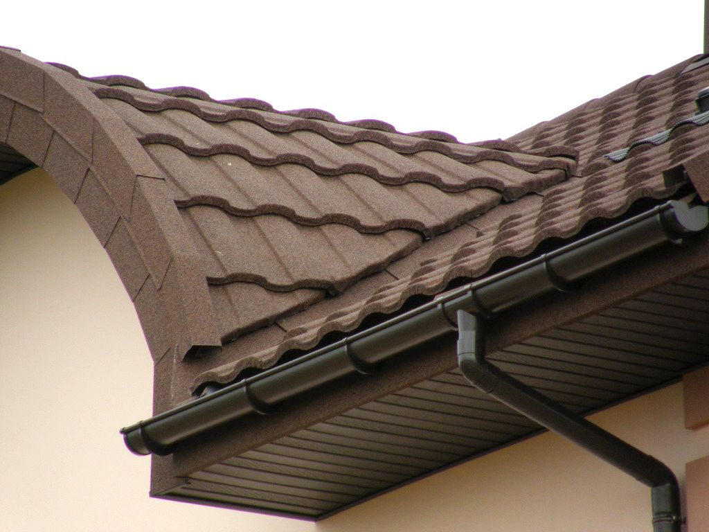
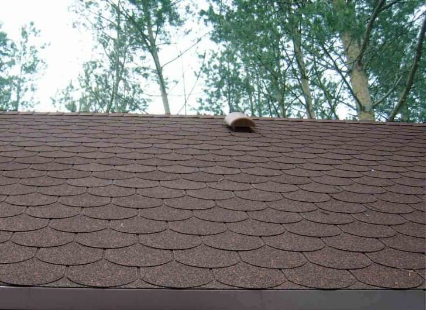

Черепица , металлочерепица, ее марки и применение

От качества кровли зависит защищенность всего здания и комфорт жилья. Поэтому при выборе крыши обращайте внимание не на ее цену, а на надежность и долговечность всей кровельной системы, ведь именно эта конструктивная часть здания больше всего подвержена атмосферным воздействиям. Она должна выдерживать перепады температур, ветер и дождь, снег и обледенение, а также обладать хорошей вентиляцией и огнеупорными свойствами. Эстетичный вид крыши также имеет немаловажное значение. Архитектурная выразительность здания напрямую зависит от материала покрытия и его формы.
Как же сделать правильный выбор, учитывая все нужные свойства? Рассмотрим основные виды такого кровельного материала как черепица — их особенности, достоинства и недостатки.
Металлочерепица
Изготавливается из стали, защищенной цинковым и полимерным покрытием. Существуют различные защитные покрытия металлочерепицы, которые разнятся по своим свойствам. Благодаря такому выбору можно подобрать материал, учитывая частные требования строительного объекта. От типа покрытия зависит его качество и, соответственно, цена металлочерепицы. Основные варианты покрытия:
- полиэстер – самый экономичный,
- пластизол – самый устойчивый,
- ПВДФ – самый долговечный,
- пурал – самый антикоррозийный и цветоустойчивый.
Сегодня металлочерепица является одной из самых популярных, сравнительно недорогих и наиболее распространенных видов черепицы. Если произвести монтаж металлочерепицы согласно всем техническим требованиям, то она прослужит вам 50 лет. Главным ее недостатком является низкая звукоизоляция и особенные требования монтажа.
Керамическая черепица
Такой вид черепицы считается самым тяжелым. Однако, несмотря на это, керамическая черепица пользуется спросом и популярностью, так как обладает массой плюсов. Изготавливается она из глины и долговечность ее более 100 лет. Очень устойчива к различным природным воздействиям, пожароустойчива, экологически чистая. Имеет замечательный эстетичный вид благодаря разнообразию форм и цветов. Недостатками керамической черепицы является ее тяжелый вес, что требует увеличение сечения стропил, а также хрупкость и дороговизна.
Цементная черепица
Ее появление связано с высокой ценой на керамическую черепицу, цементная черепица является более дешевой альтернативой. Их свойства похожи, а вот материал, из которого изготовлена цементная черепица, более дешевый – это смесь цемента, щелочестойкого пигмента, песка и воды. Все достоинства и недостатки цементной черепицы такие же, как и у керамической. Отличие лишь в цене (она в 2 раза дешевле) и более тяжелом весе. Но существует собственный минус – пористость, которая приводит к цветению.
Композитная черепица
Также как и металлочерепица она изготовлена из стали, а снаружи покрыта акриловой грунтовкой и слоем из гранул камня. Композитная черепица практически не имеет недостатков. Отлично переносит различные атмосферные воздействия, имеет высокую пожароустойчивость, звуко и теплоизоляцию, хорошо режется и гнется, легкая и экологичная. Недостатков практически нет. Единственный – это стоимость, которая на порядок выше, чем у металлочерепицы.
Битумная черепица
Это довольно молодой вид черепицы, относящийся к мягким видам кровли, позволяющий покрывать поверхность сложных форм. Материал еще называют гибкой или мягкой черепицей. Основным элементом, из которого она изготовлена, является стеклохолст. Снаружи черепица покрыта минеральной крошкой, которая может иметь различный цвет, а внутренняя поверхность пропитана клеем. К достоинствам этого вида покрытия относятся легкость, звуко- и теплоизоляция, возможность монтажа на любых поверхностях. К недостаткам относятся небольшой срок эксплуатации, неэкологичность, слабая устойчивость к повреждениям.
Перед покупкой кровли обязательно взвесьте все за и против. Идеальных кровельных материалов нет – все они имеют и свои недостатки. Поэтому изучите все характеристики различных видов черепицы и определитесь, какие из них для вас наиболее важны.
По материалам сайта : http://www.remontbp.com/